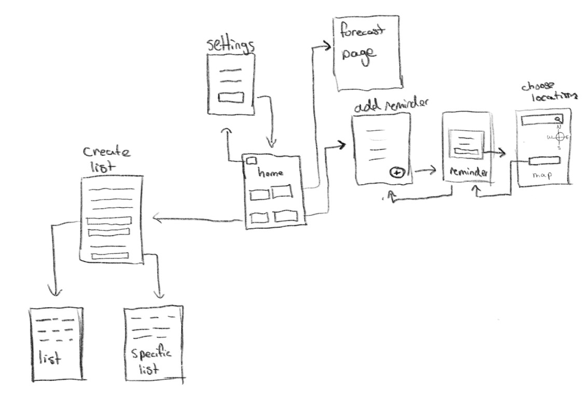
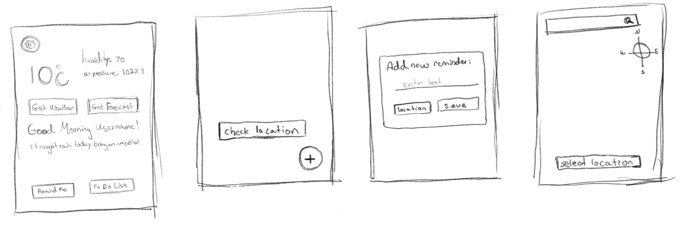
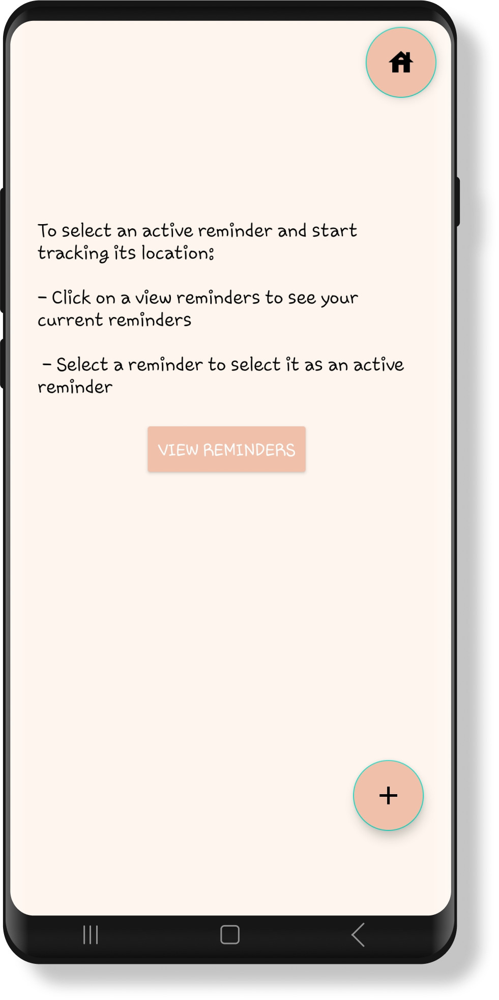
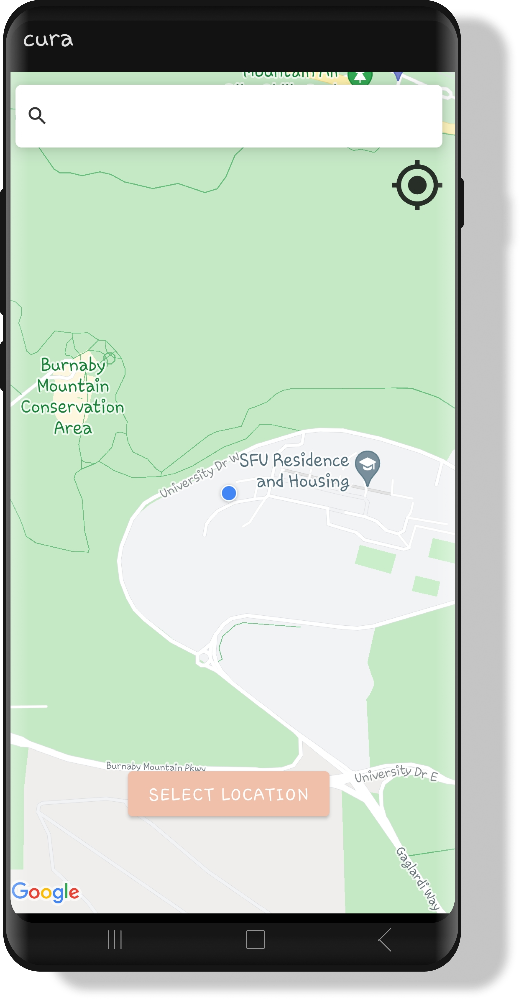
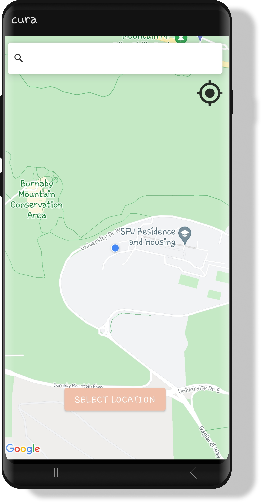
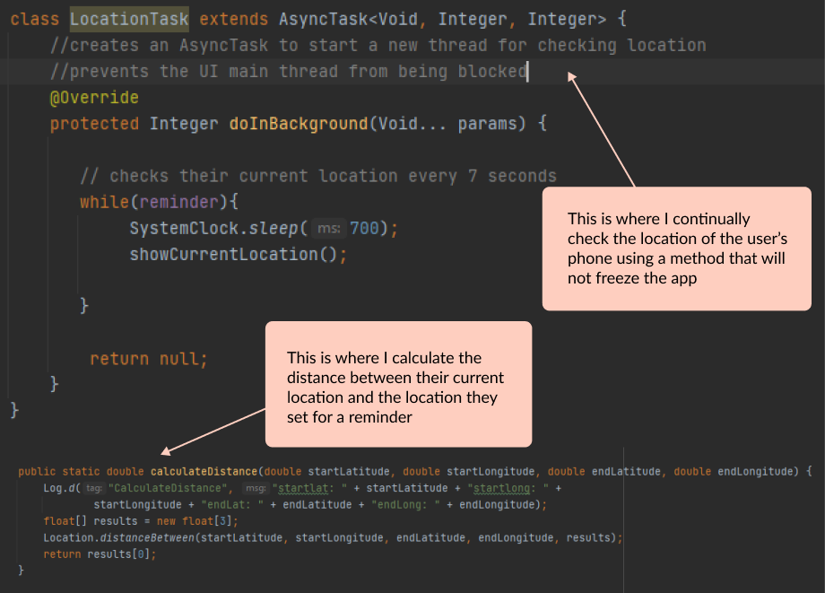

Project at Downtown Surrey Business Improvement Association
Role:
Tools:
Designer
Figma & WordPress
Date:
Summer 2023
Link:
https://wordpress.guacmexgrill.ca/This website was created during part of my internship at the Downtown Surrey Business Improvement Association (DSBIA). I was part of a team called Click on Surrey, that outsourced to local businesses in the Downtown Surrey area to offer marketing, technological and other design based services. I was specifically in charge of website related services, including website designs/development and any related technical assistance. Guacamole Mexican Grill is a restaurant in Surrey BC, that was a client of my team and I. As a team we assisted them with marketing, social media, a new menu and website design. My individual role was to design them a new website. Their major concern with their previous website was an inconsistency with their branding from what was established within the physical restaurant to online assets.
To begin, I used a tablet to sketch the intended navigation for my application in figure 1. From here I could code the layout of each screen, and add basic functionality to move throughout the app. I then split up the remaining functionalities into individual problems to tackle.
 Figure 1: Sketch of layout and navigation of the application
Figure 2: Sketch for the layout of the home screen and reminder interfaces
One of the more interesting functions I created was location-based reminders, which is sketched out in figure 2 To accomplish this, I created an interface with buttons for the user to create a new reminder with a task name, and a button to choose a location, shown in Figure 3 and 4.
 

Figure 3: Screen to add a new reminder
Figure 4: Screen where the user can fill in details of reminder
Figure 5: Screen where the user can search for their reminder's location
Figure 6: Screenshot of section of Java code in Android Studio used to compare the user's location to the location of the reminder
Next as shown in figure 5 I used a google API (allows a program to use the features or data of another) to display a map where the user could search a location and save it. Finally, I figured out how to calculate the distance between two locations to send the user a notification when they were close.
A particular challenge I faced in the creation of Cura was based around checking the users current location and how it compared to the location of their reminder. The method I originally used to accomplish this task was part of the challenge, for it was more complicated than necessary. Exploring more efficient methods through resources on the internet with similar functionalities was essential to overcoming this, which is illustrated in figure 6. I found temporarily separating this functionality from the rest of my app was a very effective means to test these different solutions, for it enabled me to work unhindered by other parts. Throughout the creation of this application, I learned the basics of Android development with the programming languages Java and XML, how to use APIs, and different methods to store and retrieve data in an app.